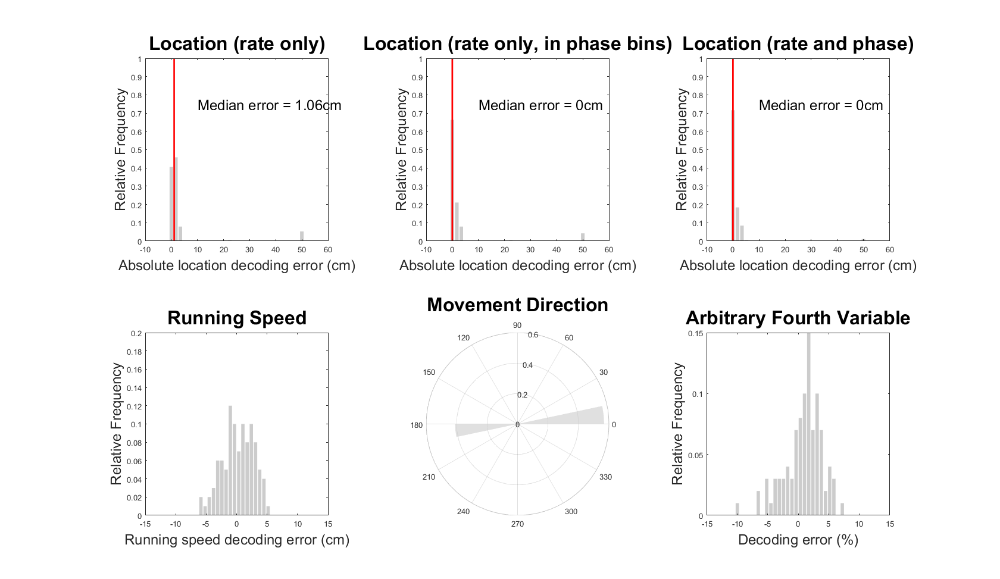
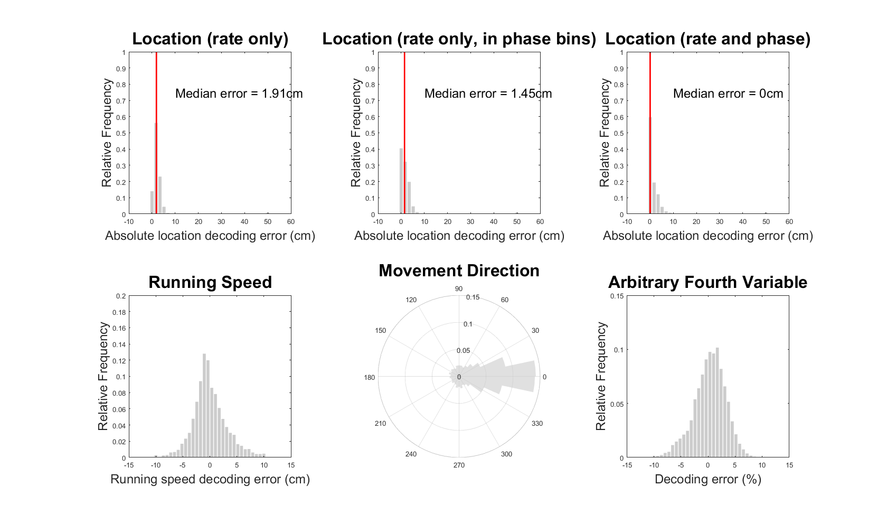
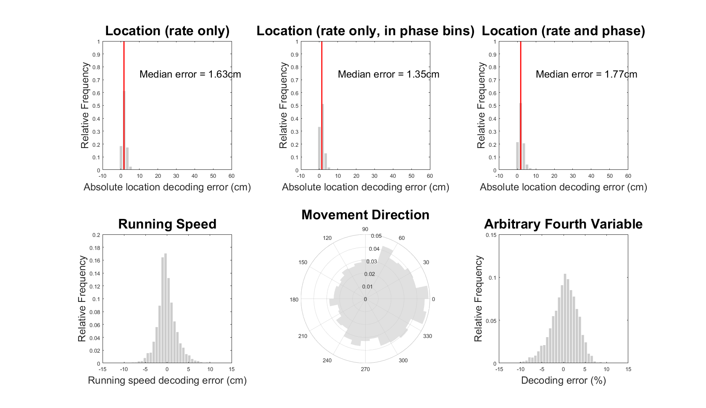

This is the readme for the simulation code associated with the paper:
Bush D, Burgess N (2020) Detection and Advantages of Phase Coding in the Absence of Rhythmicity. Hippocampus
This Matlab code was contributed by Dr Daniel Bush.
UsageNote this software also requires the fastsmooth function available from matlab file exchange:
https://www.mathworks.com/matlabcentral/fileexchange/19998-fast-smoothing-function
Download and extract this archive, add the functions from the above link to matlab's path (or add
the functions to the extracted folder) and cd to the extracted folder.
Set your simulation preferences (see the annotations at the top of
the 'humanGridSim' script), or use the defaults by simply creating
an empty 'in' structure (can type on matlab command line
in=cell2struct(cell(1,1),{'gridScales'});), and then execute:
[in,pos,LFP,gridCells,cycle,cycleDecoding] = humanGridSim(in);
As an example, to simulate grid cell firing patterns in a 1D environment and decode the movement trajectory from grid cell activity in each oscillatory cycle, execute:
in.environment = '1D';
[in,pos,LFP,gridCells,cycle,cycleDecoding] = humanGridSim(in);
This should take <30 seconds to run and then produce the figure below (cf. Figures 5 and 6 in Bush & Burgess, 2020):

Alternatively, to simulate grid cell firing patterns in a 2D environment and then decode the movement trajectory from grid cell activity in each oscillatory cycle, execute:
in.environment = '2D';
[in,pos,LFP,gridCells,cycle,cycleDecoding] = humanGridSim(in);
This should take ~30 minutes to run and then produce the figure below (cf. Figures 5 and 6 in Bush & Burgess, 2020):

Further inputs can be provided as fields of the 'in' structure (see annotations at the top of the 'humanGridSim' script for details). For example, the ability to decode movement direction from grid cell activity in each oscillatory cycle can be eliminated by simulating 'phase locked' grid firing. This can be achieved by executing:
in.environment = '2D';
in.phaseLock = 'true';
[in,pos,LFP,gridCells,cycle,cycleDecoding] = humanGridSim(in);
This should take ~30 minutes to run and then produce the figure below (cf. Figures 5 and 6 in Bush & Burgess, 2020):

Comments, criticisms and questions should be directed to drdanielbush at gmail.com